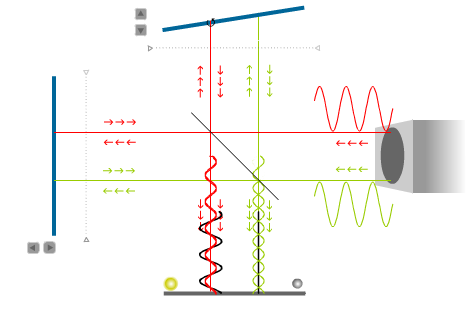

Michelson interferometer
It uses a single light source, and a beam splitter that separates the beam in two, which are sent to two plane mirrors that reflect them to the screen.

If the distances from each mirror to the screen are different, the two waves will seem to come from two points at different distances from the screen.
The source used is a laser beam, which provides a coherent light. One of the mirrors is fixed while the other can be moved.
The laser used in the interferometer produces a parallel beam. If we consider a single ray of light coming out of the laser, the interference on the screen will be either completely constructive or destructive, depending on the difference of the distances from the two mirrors to the beam splitter.
The actual laser beam is not just a straight line but a cylinder, and the mirrors will have a small deviation from the perpendicular to the beam.
That implies that the distance travelled by different rays in different parts of the beam will be different, producing zones of destructive and constructive interference in different places of the screen. The interference pattern obtained is composed by parallel dark and bright fringes.
A displacement of the movable mirror of one fourth the laser's wavelength will increase in one half of the wavelength the distance travelled by one of the beams. At the points where the wave function used to be minimum it will now become maximum; where there was constructive interference, there will now be destructive interference: each bright fringe will move to the place where its neighboring dark fringe was.